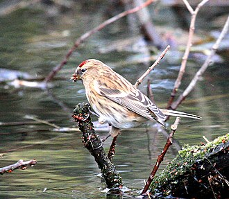
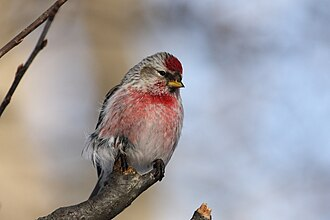

Egå Engsø – latest 14 days
2026-11-11 14:34Total: 61Number in brackets: the total number of birds reported in the last 14 days (all reports added up, so the same bird can be counted more than once).
 European Golden Plover
European Golden Plover
Hjejle
Pluvialis apricaria (1500)
 Common Wood Pigeon
Common Wood Pigeon
Ringdue
Columba palumbus (800)
 Greylag Goose
Greylag Goose
Grågås
Anser anser (464)
 Common Gull
Common Gull
Stormmåge
Larus canus (410)
 Eurasian Wigeon
Eurasian Wigeon
Pibeand
Mareca penelope (330)
 Northern Lapwing
Northern Lapwing
Vibe
Vanellus vanellus (320)
 Tufted Duck
Tufted Duck
Troldand
Aythya fuligula (320)
 Eurasian Teal
Eurasian Teal
Krikand
Anas crecca (168)
 Common Starling
Common Starling
Stær
Sturnus vulgaris (90)
 Black-headed Gull
Black-headed Gull
Hættemåge
Chroicocephalus ridibundus (70)
 Western Jackdaw
Western Jackdaw
Allike
Coloeus monedula (65)
 Fieldfare
Fieldfare
Sjagger
Turdus pilaris (50)
 Common Pochard
Common Pochard
Taffeland
Aythya ferina (47)
 Whooper Swan
Whooper Swan
Sangsvane
Cygnus cygnus (42)
 European Goldfinch
European Goldfinch
Stillits
Carduelis carduelis (39)
 Rook
Rook
Råge
Corvus frugilegus (36)
 Mallard
Mallard
Gråand
Anas platyrhynchos (35)
 Mute Swan
Mute Swan
Knopsvane
Cygnus olor (26)
 Gadwall
Gadwall
Knarand
Mareca strepera (26)
 European Herring Gull
European Herring Gull
Sølvmåge
Larus argentatus (25)
 Northern Pintail
Northern Pintail
Spidsand
Anas acuta (25)
 Northern Shoveler
Northern Shoveler
Skeand
Spatula clypeata (21)

Lesser Redpoll
Gråsisken, Lille (ssp. cabaret)
Acanthis cabaret (20)
 Common Goldeneye
Common Goldeneye
Hvinand
Bucephala clangula (16)
 Bearded Reedling
Bearded Reedling
Skægmejse
Panurus biarmicus (14)
 Hooded Crow
Hooded Crow
Krage, Gråkrage (ssp. cornix)
Corvus cornix (12)
 Great Cormorant
Great Cormorant
Skarv
Phalacrocorax carbo (10)
 Twite
Twite
Bjergirisk
Linaria flavirostris (10)
 Long-tailed Tit
Long-tailed Tit
Halemejse
Aegithalos caudatus (8)
 Common Snipe
Common Snipe
Dobbeltbekkasin
Gallinago gallinago (7)
 Eurasian Coot
Eurasian Coot
Blishøne
Fulica atra (7)
 Great Tit
Great Tit
Musvit
Parus major (5)
 Common Blackbird
Common Blackbird
Solsort
Turdus merula (5)
 Redwing
Redwing
Vindrossel
Turdus iliacus (5)
 Meadow Pipit
Meadow Pipit
Engpiber
Anthus pratensis (5)
 Eurasian Magpie
Eurasian Magpie
Husskade
Pica pica (4)
 Grey Heron
Grey Heron
Fiskehejre
Ardea cinerea (4)
 Common Buzzard
Common Buzzard
Musvåge
Buteo buteo (3)
 Eurasian Wren
Eurasian Wren
Gærdesmutte
Troglodytes troglodytes (3)
 Eurasian Siskin
Eurasian Siskin
Grønsisken
Spinus spinus (3)
 Common Merganser
Common Merganser
Stor Skallesluger
Mergus merganser (3)
 Eurasian Jay
Eurasian Jay
Skovskade
Garrulus glandarius (3)
 Eurasian Blue Tit
Eurasian Blue Tit
Blåmejse
Cyanistes caeruleus (3)
 Barnacle Goose
Barnacle Goose
Bramgås
Branta leucopsis (3)
 Great Egret
Great Egret
Sølvhejre
Ardea alba (2)
 White-tailed Eagle
White-tailed Eagle
Havørn
Haliaeetus albicilla (2)
 Common Kestrel
Common Kestrel
Tårnfalk
Falco tinnunculus (2)
 European Robin
European Robin
Rødhals
Erithacus rubecula (2)
 Great Spotted Woodpecker
Great Spotted Woodpecker
Stor Flagspætte
Dendrocopos major (2)

Common Redpoll
Gråsisken
Acanthis flammea (2)
 Eurasian Skylark
Eurasian Skylark
Sanglærke
Alauda arvensis (2)
 Common Crane
Common Crane
Trane
Grus grus (2)
 Common Chaffinch
Common Chaffinch
Bogfinke
Fringilla coelebs (1)
 Little Grebe
Little Grebe
Lille Lappedykker
Tachybaptus ruficollis (1)
 Eurasian Bullfinch
Eurasian Bullfinch
Dompap
Pyrrhula pyrrhula (1)
 Water Rail
Water Rail
Vandrikse
Rallus aquaticus (1)
 Eurasian Sparrowhawk
Eurasian Sparrowhawk
Spurvehøg
Accipiter nisus (1)
 Great Black-backed Gull
Great Black-backed Gull
Svartbag
Larus marinus (1)
 Goldcrest
Goldcrest
Fuglekonge
Regulus regulus (1)
 European Greenfinch
European Greenfinch
Grønirisk
Chloris chloris (1)
 Greater White-fronted Goose
Greater White-fronted Goose
Blisgås
Anser albifrons (1)